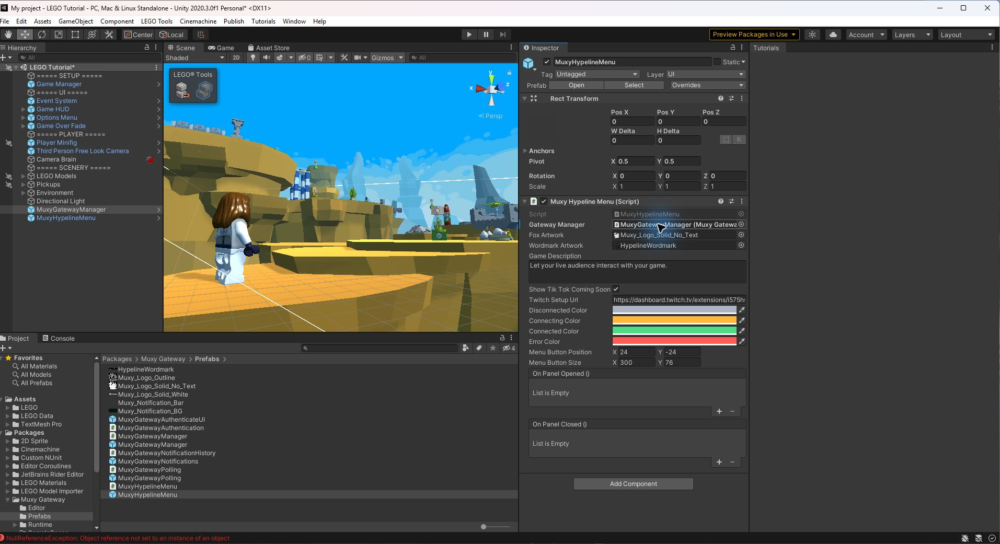
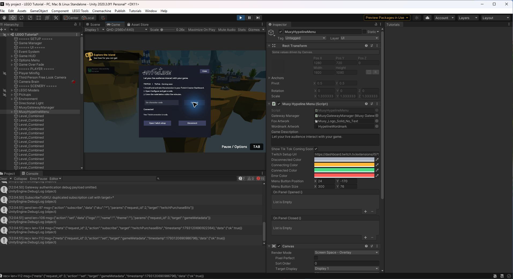
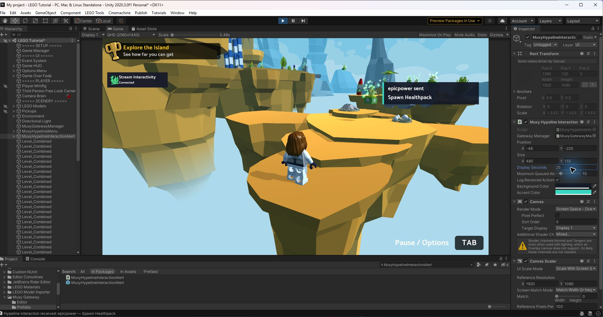

Bring your viewers
into the game.
Connect your Unity game with Muxy Hypeline, using the existing Muxy Gateway service and Twitch extension. Go from a fresh install to your first Twitch viewer action, then add live game data and polls.
Existing MuxyGateway integrations continue to work. New code can also construct MuxyHypeline.SDK, using the same API and MuxyGateway data types. Set up the Hypeline menu and interaction alerts below.
A viewer selects Spawn Healthpack in the extension. Your Unity demo gains 10 health, and the updated value appears back in the extension.
The streamer connects a channel once. Viewers interact through the Gateway extension.
Before you start
You should be comfortable adding GameObjects, editing Inspector fields, and attaching C# scripts. Start in a small test scene before connecting your production gameplay.
- A Unity project. This checkout declares Unity 2020.3.0f1 as its minimum. Use a desktop target for this walkthrough.
- The SDK checkout or an appropriate release ZIP. Keep the native libraries and their
.metafiles with the package. - A Twitch broadcaster account with permission to install and activate the Muxy Gateway extension on its channel.
- A viewer account or separate browser session to test the audience experience.
- A Game ID linked to this broadcaster. In the extension's Configure view, check Linked Games and use the exact ID shown there. The SDK README suggests
gateway-testingfor development, but this walkthrough's broadcaster hadgamelink-testinglinked. Request your own permanent ID from Muxy before release.
This guide follows the source in this checkout, including its Unity compatibility updates. The manifest currently says 0.0.1; that value does not identify which compatibility fixes a ZIP contains. Record your release tag or commit and use the matching source. Older examples may use Action or SetActions; this checkout uses GameAction and SetGameActions.
What has been validated?
The checked-in October 23, 2026 reports record clean package compilation in Unity 2020.3.0f1, 2020.3.17f1, 2020.3.48f1, 2022.3.62f3, 2023.2.20f1, 6000.0.85f1, 6000.4.8f1, and 6000.6.6f1. Windows x64 Mono and IL2CPP builds and native smoke checks passed on 2020.3.48f1 and 6000.6.6f1.
On October 26, this walkthrough was performed in a Unity 6000.6.6f1 Windows project: the local package installed, the scene compiled, local Health changed from 50 to 60, live Twitch PIN authentication succeeded, a 30-second poll returned a final no-vote result, and a second Play session authenticated from the saved refresh token. A viewer action, viewer vote, and standalone player remain separate checks. Other desktop platforms need their own validation; WebGL, mobile, and consoles are outside this walkthrough. See the compatibility change and evidence.
Install the SDK
- Get the package. Use this Hypeline checkout or a distributed package that includes the Hypeline prefabs. Historical Gateway releases may not include them. If using a ZIP, extract it to a stable folder outside your Unity project's
Assetsfolder. Locate the SDK'spackage.json. - Open Package Manager. In Unity, open Window → Package Manager (in some newer Editors, Window → Package Management → Package Manager).
- Add the local package. Open the + or Add menu, choose Add package from disk… / Install package from disk…, and select the SDK's
package.json. Select the manifest, rather than a prefab or the ZIP. - Let Unity resolve dependencies. Wait for package resolution and script compilation. Check the Console for errors before continuing.
- Import TMP resources if needed. Use Window → TextMeshPro → Import TMP Essential Resources if the project does not have them. Import Essentials when prompted by a TMP UI component.
| Package | Requested version | Used for |
|---|---|---|
com.unity.textmeshpro | 3.0.6 | Prefab UI text |
com.unity.ugui | 1.0.0 | UI components |
com.unity.modules.imageconversion | 1.0.0 | Logo PNG encoding |
On Unity 2023.2 and newer, let Package Manager resolve the Editor's built-in TextMeshPro compatibility package and uGUI version. Do not force older UI packages into a newer Editor. Check Packages/packages-lock.json for resolved versions. Both integration paths share the Muxy.Gateway assembly and its UI dependencies.
In the earlier Unity 6000.6.6f1 walkthrough, Package Manager showed Muxy Gateway 0.0.1 as a Local package and resolved uGUI 2.6.0 even though the manifest requests 1.0.0. This rebranded package is displayed as Muxy Hypeline. Check the first actual error if your project behaves differently.
Using your own assembly definition? Add Muxy.Gateway to its Assembly Definition References. SDK types use using MuxyGateway;; the prefab components such as MuxyGatewayManager are in the global namespace.
Checkpoint Find Packages → Muxy Hypeline → Prefabs in the Project window. Keep the package folder in place: a local installation references that folder.
Add the menu and interaction alerts
Use these prefabs to add a creator-facing Stream Interactivity button to a main menu and show viewer actions in the game. Both connect to the same manager and existing Muxy Gateway service.
- Add the manager. Open Packages → Muxy Hypeline → Prefabs and drag
MuxyGatewayManagerinto the scene Hierarchy. Reuse an existing manager if there is one; keep only one active. Set Game ID to the exact ID listed under Linked Games in the broadcaster's Twitch extension configuration. - Add the menu. Drag
MuxyHypelineMenuinto the main-menu scene. Select it and drag the scene's manager into its Gateway Manager Inspector field. Enter a Game Description and adjust Menu Button Position and Menu Button Size to fit your menu. - Add the alert. Drag
MuxyHypelineInteractionAlertinto the scene where viewer actions should appear. Select it and assign the same scene manager to Gateway Manager before Play mode. Adjust Position, Size, colors, Play Sounds, volume, or optional category sound clips in the Inspector. - Prepare the UI. Keep exactly one EventSystem in the scene, with an input module compatible with the project's active input system. Import TMP Essential Resources if prompted. You can place the prefabs under a screen-space Canvas; without a parent Canvas, each creates an overlay Canvas at runtime. The menu button, panel, and alert cards are built during Play mode.
The Hypeline menu provides its own connection panel. The older demo below uses MuxyGatewayAuthenticateUI instead; don't add both interfaces or a second manager unless you intentionally need them. The Hypeline menu does not create an EventSystem. TikTok is a coming-soon label, not a working connection.

Connect a Twitch channel
- In the broadcaster's Twitch Creator Dashboard, install and activate the existing Muxy Gateway extension. Open its Configure view, verify the linked Game ID, and select Get New Code.
- Enter Play mode, select Stream Interactivity, enter the six-character code, and select Connect. Codes expire after five minutes; request a fresh code if needed.
- Wait for the fox and text to show Connected. Gray indicates disconnected, amber connecting or reconnecting, and red a connection or authentication issue. A connected status verifies the connection, not a viewer action.

Test an alert and handle the action
- On the manager, register an action your game supports using the same ID as the viewer action. For the walkthrough, configure
healthpackas Spawn Healthpack, with category Help, state Available, impact1, and count65535. The viewer-action walkthrough explains how to bind its gameplay callback. - From a separate viewer session, trigger the configured action in the Twitch extension. The alert listens to the manager's
OnAnyGameActionUsedevent and displays the viewer and action. By default it also logs the receipt to the Unity Console. Use an active Audio Listener and unmuted game audio to hear sounds. - Implement and bind a separate gameplay handler that performs the effect and accepts or refunds the transaction as appropriate. The alert only displays the receipt; it does not fulfill or acknowledge the action. You can call
ShowAlert(viewerName, actionName)for a visual preview, but that does not send or test a Twitch interaction.

Alerts appear for six seconds and fade during the last second; newer alerts appear above older ones. For additional screenshots and Unity 6 notes, see the detailed Hypeline setup guide.
Set up your scene
This sample uses the older Gateway authentication prefab and a demo controller. If you already added the Hypeline menu, reuse its manager and skip adding the older authentication UI and its EventSystem. Alternatively, use the C# integration. Use one SDK owner per integration.
- Create and save a test scene named
GatewayDemo. In Unity 6, File → New Scene → Basic (URP) works for this demo; the existing sample scene can stay untouched. - Add
MuxyGatewayManager.prefabfrom the package'sPrefabsfolder to the Hierarchy. Set its Game ID to an exact ID shown under Linked Games in the broadcaster's Gateway Configure view before entering Play mode. This walkthrough usedgamelink-testing; use the ID linked to your account. - Set Game Metadata → Name to
Gateway Unity Demo. Set Theme todefault. Leave Logo empty for this first test; in this checkout it is an encoded string, rather than a Texture2D Inspector slot. - Add
MuxyGatewayAuthenticateUI.prefab. In itsMuxyGatewayAuthenticationcomponent, assign the scene's manager to Gateway Manager. The Inspector object picker can find the scene instance if dragging does not work. Set references before pressing Play; the UI subscribes inOnEnable. - Keep exactly one EventSystem. The authentication prefab contains one. Expand its hierarchy and check before adding another. An extra scene EventSystem produced Unity's duplicate EventSystem warning in this walkthrough; remove the extra if you see it.
- Match the EventSystem input module to your project. In Unity 6 with the new Input System active, expand the authentication prefab and select its EventSystem. If the Inspector warns that Standalone Input Module will not work, select Replace with InputSystemUIInputModule. Do this outside Play mode and save the scene; Play mode changes revert. This fixed an unclickable PIN field in the walkthrough.
- Create one Game Text. On the manager, expand Game Texts and add element 0: Label =
Health, Value =50, Icon =fa-solid:heart. The tutorial script updates this element by index. - Add the demo behavior. Download GatewayPrefabDemo.cs into your project's
Assets/Scriptsfolder. If you copied it while Unity was open and Add Component cannot find it, use Assets → Refresh and wait for compilation. Attach it to a new GameObject namedGatewayDemoControllerand assign its Gateway Manager field to the scene manager. - Enable the demo's IMGUI input. In Edit → Project Settings → Player → Other Settings, set Active Input Handling to Both if the project uses the new Input System only. The demo's
OnGUIbuttons read legacy input. Unity may request an Editor restart after this change.
View the complete prefab demo script C#
using MuxyGateway;
using UnityEngine;
// Tutorial scene only: use the prefab manager as the sole SDK owner.
public class GatewayPrefabDemo : MonoBehaviour
{
public MuxyGatewayManager GatewayManager;
private int health = 50;
private string status = "Enter a PIN in the Gateway authentication UI.";
private void OnEnable()
{
if (GatewayManager == null)
{
Debug.LogError("Assign Gateway Manager before enabling the demo.");
enabled = false;
return;
}
GatewayManager.OnAuthentication.AddListener(OnAuthentication);
}
private void OnDisable()
{
if (GatewayManager != null)
GatewayManager.OnAuthentication.RemoveListener(OnAuthentication);
}
private void OnAuthentication(AuthenticationResponse response)
{
status = response.HasError ? "Authentication failed. Request a fresh PIN."
: "Authenticated. Try Spawn Healthpack in the extension.";
if (!response.HasError) PublishHealth();
}
// Wire the action's Dynamic GameActionUsed event to this public method.
public void OnHealthpack(GameActionUsed used)
{
if (used.ActionID != "healthpack") return;
ApplyHealth();
GatewayManager.AcceptGameAction(used, "Added up to 10 health.");
status = "Viewer action received: healthpack.";
Debug.Log("Gateway viewer action received: healthpack.");
}
private void ApplyHealth()
{
health = Mathf.Min(100, health + 10);
if (GatewayManager.IsAuthenticated()) PublishHealth();
}
private void PublishHealth()
{
// The guide creates Health as Game Texts element 0.
GameText text = GatewayManager.GetGameTextAt(0);
text.Value = health.ToString();
GatewayManager.SetGameTextAt(text, 0);
}
public void StartDemoPoll()
{
if (!GatewayManager.IsAuthenticated()) return;
PollConfiguration config = new PollConfiguration
{
Prompt = "Where should we go next?",
Mode = PollMode.Order,
DurationInSeconds = 30
};
config.Options.Add("Forest");
config.Options.Add("Desert");
config.Options.Add("Ice Cave");
config.OnPollUpdate = update =>
{
// The manager does not forward this delegate automatically.
GatewayManager.OnPollUpdate.Invoke(update);
if (!update.IsFinal) return;
status = update.Count > 0 && update.Winner >= 0 &&
update.Winner < config.Options.Count
? "Poll winner: " + config.Options[update.Winner]
: "Poll ended without a usable winner.";
Debug.Log(status);
};
GatewayManager.SetPollConfiguration(config);
GatewayManager.StartPoll();
}
private void OnGUI()
{
GUILayout.BeginArea(new Rect(16, 16, 440, 190), GUI.skin.box);
GUILayout.Label("Gateway prefab demo | Health: " + health);
GUILayout.Label(status);
if (GUILayout.Button("Local test: add 10 health")) ApplyHealth();
GUI.enabled = GatewayManager != null && GatewayManager.IsAuthenticated();
if (GUILayout.Button("Start 30-second viewer poll")) StartDemoPoll();
GUI.enabled = true;
GUILayout.EndArea();
}
}The manager constructs SDK(GameID) in OnEnable, pumps SDK.Update() every frame, and starts the production transport when authenticating with a PIN or saved refresh token. A development Game ID and the sandbox transport are separate concepts: this prefab calls RunInProduction(), even when you use a development Game ID.
Connect a Twitch channel
The streamer authenticates the game to their channel. Viewers use the extension on that channel; they do not enter the streamer's PIN in your game. The steps below use the older authentication prefab; if you use the Hypeline menu, follow its connection instructions instead.
- Install Muxy Gateway on the broadcaster's channel. Open the Gateway extension dashboard. Sign in as the broadcaster, install the extension, and activate it in an available slot offered by Twitch. Check My Extensions → Activated for its green status and placement.
- Open the extension's configuration. Select Configure on the active extension. Check Linked Games against the manager's exact Game ID. Select Get New Code for a six-character configuration PIN. The SDK README says PINs expire after five minutes; use it promptly and request another if it expires. Use the copy control or read carefully;
7andZlooked similar in this walkthrough. - Enter Play mode in Unity. Enter that PIN in the authentication prefab's input and select its authenticate button. Wait for the result instead of submitting repeatedly.
- Confirm success in the game. The authentication UI switches to its success group. The demo should display
Authenticated. Try Spawn Healthpack in the extension.
An earlier native debug message printed the outgoing PIN in Unity Console during this walkthrough. This checkout now omits credential-bearing native debug payloads, but older packages and existing logs may still contain PINs or tokens. Clear the Console before screenshots, inspect logs before sharing them, and never include the code in documentation.
Test a fresh login and a returning streamer
The prefab manager saves the refresh token in PlayerPrefs under MuxyGatewayRefreshToken and attempts refresh-token authentication on the next enable. For a fresh-PIN test, remove that key before entering Play mode using your development tooling, then request a fresh PIN. Do not clear all PlayerPrefs.
After a successful login, stop and restart Play mode to test returning-streamer authentication. A failed refresh attempt clears the stored token; show the PIN flow again. The current prefab stores this credential in PlayerPrefs, which is not encrypted secure storage. For a shipping integration, review token storage for your target platform.
This checkout's manager creates a new SDK in Deauthenticate() without reattaching its action/Bits callbacks. Do not treat a successful disconnect button click as proof that the next session is healthy. For this walkthrough, restart Play mode before reconnecting and verify the full disconnect/reconnect path separately before release.
Receive your first viewer action
Leave Play mode before editing the scene. On MuxyGatewayManager, expand Game Actions and add one element with these values:
| Inspector field | Value | Why it matters |
|---|---|---|
| ID | healthpack | Stable, unique ID used by your handler |
| Name | Spawn Healthpack | The label viewers select |
| Description | Add up to 10 health to the player. | Explains the gameplay effect |
| Category | Help | Groups the action by effect |
| State | Available | Makes the action selectable |
| Impact | 1 | A small effect on gameplay; the Inspector range is 1–5 |
| Icon | fa-solid:heart | Extension icon identifier |
| Count | 65535 | The value of GameAction.InfiniteCount |
In the action's On Game Action Used UnityEvent, select +, drag in GatewayDemoController, then choose GatewayPrefabDemo → OnHealthpack under Dynamic GameActionUsed. Use the dynamic event so the received transaction reaches the handler.
Prove the complete round trip
- Enter Play mode and check that the PIN UI renders and health starts at 50. The viewer poll button stays disabled until authentication.
- Use Local test: add 10 health once. Health should become 60, even before you have a PIN. This verifies the demo's game logic only. Restart Play mode to reset health to 50.
- Authenticate with the broadcaster's fresh PIN, then open the channel's active Gateway extension in a viewer session. Confirm the demo title, Health text, and Spawn Healthpack action appear. Test under the channel conditions Twitch requires for that extension placement.
- Select Spawn Healthpack through the extension. Follow its available test/interaction flow. If a purchase is involved, review the Twitch confirmation and cost; this guide does not assume a free-purchase simulator.
- Confirm Unity shows Health: 60, the demo status says
Viewer action received: healthpack., and the extension's Health value becomes 60.
The broadcaster channel was offline during this walkthrough. Its viewer page did not display the active overlay, so the viewer action remains unverified. Run this step while the channel is live and the extension is visible to a viewer.
public void OnHealthpack(GameActionUsed used)
{
if (used.ActionID != "healthpack") return;
ApplyHealth();
GatewayManager.AcceptGameAction(used, "Added up to 10 health.");
}AcceptGameAction reports fulfillment. If your real game cannot perform an action, use RefundGameAction with the received event and a useful reason instead. Do not accept and refund the same transaction. Before shipping, deduplicate transaction IDs so repeated delivery cannot apply gameplay twice; the demo keeps the handler small and does not implement durable transaction tracking.
Checkpoint A viewer-triggered event changed Unity gameplay. A local button click or an authentication success alone does not pass this checkpoint.
Keep viewers up to date
Game Texts are labeled values in the extension. Use them for the current level, player health, difficulty, or loadout. The demo sends Health after authentication and whenever health changes.
// Update the Health entry created at index 0 in the manager.
GameText healthText = GatewayManager.GetGameTextAt(0);
healthText.Value = "60";
GatewayManager.SetGameTextAt(healthText, 0);
// Add or clear entries, then submit the whole list.
GatewayManager.AddGameText(new GameText
{
Label = "Level", Value = "Forest", Icon = "fa-solid:dungeon"
});
GatewayManager.SubmitGameTexts();AddGameText() and ClearGameTexts() change the manager's local list; call SubmitGameTexts() after these operations. The code-only SDK uses SetGameTexts(GameText[]) to publish the complete list. Send meaningful state changes instead of resending identical data every frame.
Enable actions only when they can run
// Prefab manager: call when pausing / resuming valid gameplay.
GatewayManager.SetAllGameActionStates(GameActionState.Unavailable);
GatewayManager.SetAllGameActionStates(GameActionState.Available);
// After editing a manager action, explicitly submit the list.
GameAction action = GatewayManager.GetGameActionAt(0);
action.State = GameActionState.Hidden;
GatewayManager.SetGameActionAt(action, 0);
GatewayManager.SubmitGameActions();Use Unavailable for a visible action viewers cannot currently use and Hidden when it should not appear. Keep IDs unique. Choose finite counts for disruptive mechanics and restore availability only after the next scene or match is ready.
Add a game logo
Import a readable texture in a supported format: RGB24, RGBA32, or ARGB32. Enable Read/Write and choose a compatible texture format in its import settings. Use the SDK's static conversion helper:
GameMetadata metadata = GatewayManager.GetGameMetadata();
metadata.Logo = SDK.ConvertTextureToBase64(yourReadableTexture);
GatewayManager.SetGameMetadata(metadata);Here yourReadableTexture is your own assigned Texture2D. Retain the existing metadata when changing the logo.
Let viewers choose what happens next
The demo's Start 30-second viewer poll button publishes a poll with Forest, Desert, and Ice Cave options. It uses PollMode.Order for one vote per viewer; PollMode.Chaos allows repeated voting. A duration of 0 is infinite, so use a positive duration for this test.
- While authenticated, select the demo's poll button once.
- In the viewer extension, select a poll option and submit a vote.
- After 30 seconds, verify the demo reports the winning option. With zero votes, it reports no usable winner.
- Apply a gameplay decision only on a final update, and validate the result before indexing an options list. Decide how your game should handle ties and no votes; the demo uses the reported winner when valid.
Optional: show the bundled polling UI
Outside Play mode, add MuxyGatewayPolling.prefab and assign its Gateway Manager. The demo's poll callback contains this bridge:
config.OnPollUpdate = update =>
{
GatewayManager.OnPollUpdate.Invoke(update);
if (!update.IsFinal) return;
// Validate vote count and winner before applying game logic.
};MuxyGatewayManager.StartPoll() passes its configuration to the SDK; it does not automatically forward PollConfiguration.OnPollUpdate into the manager's UnityEvent. The widget listens to that UnityEvent, so the bridge is required.
The current polling prefab does not initialize its countdown from the configured duration and assumes usable result indices. For initial testing, use the demo status and SDK callback as the result. Validate or customize the widget's timer and zero-vote handling before using it in a shipped game.
Optional: action notifications
Add MuxyGatewayNotifications.prefab, assign its Gateway Manager, and keep Auto Add Action Messages enabled to use the provided template. Its script is MuxyGatewayNotificationHistory.
The current implementation has mismatched child-component lookups in its add/clear paths and maps Cost and UserID template fields to the action ID. Validate and customize it before relying on its display. The core action test above uses demo status and game state, so it does not depend on this optional widget.
Integrate directly with C#
Use this path for custom authentication and game UI. Create a separate scene without MuxyGatewayManager or its UI prefabs. Add GatewayCodeDemo.cs to Assets/Scripts, attach it to one active GameObject, replace its example Game ID with an exact ID in the broadcaster's Linked Games, and enter Play mode. The demo draws a minimal PIN field and status panel using Unity IMGUI.
| Lifecycle step | Your code owns |
|---|---|
| Initialize | Create new SDK(gameID) once per active owner. |
| Connect | Call RunInProduction(). Authentication is a separate step. |
| Process events | Call sdk.Update() every frame on the Unity main thread. |
| Authenticate | Call AuthenticateWithPIN and check response.HasError. |
| Publish | After success, register callbacks and send metadata, actions, and texts. |
| Shut down | Call StopWebsocketTransport() when the owner is disabled. |
View the complete code integration C#
using MuxyGateway;
using UnityEngine;
// Alternative to the prefab manager. Do not run both integrations together.
public class GatewayCodeDemo : MonoBehaviour
{
[SerializeField] private string gameID = "gateway-testing";
private SDK sdk;
private string pin = "";
private string status = "Request a PIN from the Gateway extension configuration.";
private int health = 50;
private bool authenticationPending;
private void OnEnable()
{
sdk = new SDK(gameID);
sdk.RunInProduction();
}
private void Update()
{
if (sdk != null) sdk.Update();
}
public void Authenticate(string enteredPIN)
{
if (sdk == null || authenticationPending || sdk.IsAuthenticated) return;
enteredPIN = enteredPIN.Trim();
if (enteredPIN.Length != 6)
{
status = "Enter the six-character PIN from the extension.";
return;
}
authenticationPending = true;
status = "Authenticating...";
sdk.AuthenticateWithPIN(enteredPIN, response =>
{
authenticationPending = false;
pin = "";
if (response.HasError)
{
status = "Authentication failed. Request a fresh PIN and retry.";
return;
}
PublishSetup();
status = "Authenticated. Try Spawn Healthpack in the extension.";
});
}
private void PublishSetup()
{
sdk.SetGameMetadata(new GameMetadata
{
Name = "Gateway Unity Demo", Logo = "", Theme = "default"
});
GameAction action = new GameAction
{
ID = "healthpack",
Name = "Spawn Healthpack",
Description = "Add up to 10 health to the player.",
Icon = "fa-solid:heart",
Category = GameActionCategory.Help,
State = GameActionState.Available,
Impact = 1,
Count = GameAction.InfiniteCount,
OnGameActionUsed = new MuxyGatewayGameActionUsedEvent()
};
action.OnGameActionUsed.AddListener(OnHealthpack);
sdk.SetGameActions(new[] { action });
// Register the global callback too: it enables native action delivery
// and dispatch to the per-action UnityEvent in this SDK revision.
sdk.OnGameActionUsed(used =>
Debug.Log("Gateway action callback received."));
PublishHealth();
}
private void OnHealthpack(GameActionUsed used)
{
health = Mathf.Min(100, health + 10);
PublishHealth();
sdk.AcceptGameAction(used, "Added up to 10 health.");
status = "Viewer action received: healthpack.";
}
private void PublishHealth()
{
sdk.SetGameTexts(new[]
{
new GameText { Label = "Health", Value = health.ToString(),
Icon = "fa-solid:heart" }
});
}
public void StartDemoPoll()
{
if (sdk == null || !sdk.IsAuthenticated) return;
PollConfiguration config = new PollConfiguration
{
Prompt = "Where should we go next?", Mode = PollMode.Order,
DurationInSeconds = 30
};
config.Options.Add("Forest");
config.Options.Add("Desert");
config.Options.Add("Ice Cave");
config.OnPollUpdate = update =>
{
if (!update.IsFinal) return;
status = update.Count > 0 && update.Winner >= 0 &&
update.Winner < config.Options.Count
? "Poll winner: " + config.Options[update.Winner]
: "Poll ended without a usable winner.";
};
sdk.StartPoll(config);
}
private void OnGUI()
{
GUILayout.BeginArea(new Rect(16, 16, 440, 230), GUI.skin.box);
GUILayout.Label("Gateway code demo | Health: " + health);
GUILayout.Label(status);
if (sdk != null && !sdk.IsAuthenticated)
{
pin = GUILayout.TextField(pin, 6);
GUI.enabled = !authenticationPending;
if (GUILayout.Button("Authenticate")) Authenticate(pin);
}
GUI.enabled = sdk != null && sdk.IsAuthenticated;
if (GUILayout.Button("Start 30-second viewer poll")) StartDemoPoll();
GUI.enabled = true;
GUILayout.EndArea();
}
private void OnDisable()
{
if (sdk != null) sdk.StopWebsocketTransport();
sdk = null;
authenticationPending = false;
pin = "";
}
}Important for this revision: initialize each action's OnGameActionUsed UnityEvent before submitting it. Also register the SDK's global OnGameActionUsed delegate; native action delivery dispatches per-action events from inside that callback. Avoid applying the same gameplay effect in both callbacks.
Add returning-streamer authentication
The code demo intentionally asks for a fresh PIN on each enable. For a persistent login, load your platform's stored refresh token and pass it to AuthenticateWithRefreshToken. In either authentication callback, save the latest response.RefreshToken after success. Tokens can change on use. On failure, clear the unusable saved token and offer the PIN flow.
Keep tokens and PINs out of logs, source control, analytics, and screenshots. sdk.IsAuthenticated is a property; the prefab wrapper exposes GatewayManager.IsAuthenticated() as a method.
This checkout's RunInProduction() and StopWebsocketTransport() return void; they do not give your caller an awaitable completion result. The demo calls the available shutdown API, but it does not establish safe rapid disable/re-enable behavior or automatic reconnect. Test network loss, scene changes, logout, shutdown, and subsequent login on your chosen SDK revision.
Test beyond a successful login
Use the following checks in order. Keep the Console visible and record the SDK tag/commit, Unity version, operating system, scripting backend, and managed stripping level for each run.
Checkboxes are a session checklist in this page, not automated test results. Refreshing resets them.
Build the test scene
Add GatewayDemo to the enabled scenes in File → Build Settings, or the scene list of your active Build Profile in Unity 6. Select the desktop target, architecture, and backend you intend to ship. Build and run it, then repeat the live checks using a fresh or deliberately stored login.
Keep the SDK's native libraries enabled for the matching platform and architecture. This package includes an Editor linker callback that preserves reflection-loaded Mono TLS configuration types. Verify a stripped player as well as a development build; import/compilation success does not prove native loading, authenticated networking, or gameplay delivery.
Troubleshooting
Start with the first failed checkpoint. Fix compilation before authentication, and authentication before viewer actions.
Unity cannot find SDK types or UI assemblies
Confirm Muxy Gateway is installed, its dependencies resolved, and the Console's first error is addressed. Add Muxy.Gateway to any consumer .asmdef. Use using MuxyGateway;. On newer Editors, let Package Manager select built-in UI providers. If you see unsupported C# constructor syntax or UTF-8 marshalling enum errors on Unity 2020.3, confirm you installed the compatibility-updated revision.
The prefab UI is blank, unstyled, or unclickable
Import TMP Essential Resources and keep exactly one active EventSystem with an input module compatible with the project. The Hypeline menu does not create an EventSystem; the older Gateway authentication prefab contains one. In Unity 6 with the new Input System, replace an incompatible Standalone Input Module with Input System UI Input Module outside Play mode and save. Confirm canvases are enabled, no other UI blocks raycasts, and the Gateway Manager reference is assigned before Play. Hypeline UI is created at runtime; the older authentication UI scripts locate prefab children by name.
The Console floods with UnityEngine.Input errors in Play mode
The tutorial's OnGUI buttons use legacy input. In Player → Other Settings → Active Input Handling, select Both for this demo and restart the Editor if Unity asks. The Unity 6.6 test project was initially set to Input System Package only; switching to Both removed the recurring InvalidOperationException errors.
Twitch's Configure modal is empty
First confirm Gateway is active under My Extensions, then reload the Twitch dashboard and open Configure again from the active extension. In this walkthrough the modal initially appeared blank, then rendered its Configuration PIN, Linked Games, and Actions controls after the broadcaster reopened it. If it remains blank, report the extension version and configuration state to Muxy or Twitch support; a PIN must come from the extension configuration.
PIN authentication fails or never finishes
Request a fresh PIN on the same broadcaster channel, remove whitespace, and compare the manager's Game ID character for character with Linked Games in the extension Configure view. Check ambiguous code characters using the copy control. A mistyped code produced 403 Forbidden / Invalid authorization token in this walkthrough; the exact code authenticated successfully. Confirm the SDK transport started and SDK.Update() runs each frame. Inspect the Console for native-load or connection errors, but do not share logs until PINs and tokens have been removed. This revision starts its transport asynchronously without exposing a connection-ready result, so a silent callback does not by itself prove the PIN is invalid. Restart the test scene before retrying a stalled connection.
I am authenticated, but the viewer sees no game or actions
Confirm the extension is activated on the same channel. Reopen the viewer session under the conditions required by the extension's placement. Check that metadata and actions were published after authentication, action IDs are unique, state is Available, and count is usable. With the prefab route, set Inspector values before Play and submit runtime list edits explicitly.
The action appears, but nothing happens in Unity
Check healthpack spelling and the Dynamic GameActionUsed binding to GatewayPrefabDemo.OnHealthpack. In code, create the per-action UnityEvent and register the global SDK action callback. Keep SDK.Update() running. Check for exceptions in your handler. Do not use a local test button as evidence of a delivered viewer transaction.
A poll appears in the extension, but the Unity widget stays hidden
Assign the widget's manager and forward the configuration delegate to GatewayManager.OnPollUpdate.Invoke(update), as shown in the demo. Confirm you received poll updates. Use the callback's final state to judge completion; the bundled countdown display requires further validation.
It works in the Editor but fails in a player
Check the player log's first failure. For DllNotFoundException, verify the native library exists and its plugin import settings match the target. For EntryPointNotFoundException, check that managed code and native binaries came from the same SDK package. Compare architecture, backend, and stripping level. Retain the package's Editor linker callback. A TLS configuration initialization error and an actual network/certificate negotiation error require separate diagnosis.
Callbacks duplicate, re-login breaks, or shutdown hangs
Use one manager or code integration, not both. Remove event listeners when custom components are disabled. Test a fresh process, then isolate scene reload, manager disable/re-enable, and logout. In the Unity 6.6 walkthrough, stopping Play mode logged The WebSocket is not connected during transport shutdown; the next clean Play run had no Console errors. The prefab's logout callback setup and transport lifecycle still need separate release testing.
Prepare for release
- Replace your development Game ID with your permanent linked Game ID and verify the production extension experience with Muxy.
- Use your own connection, PIN, failure, logout, and recovery UI. Review refresh-token storage and replace the prefab's PlayerPrefs approach where appropriate.
- Gate actions during menus, loading, pause, and unavailable gameplay. Make fulfillment idempotent by transaction ID and handle failures with a refund path.
- Define poll timeout, no-vote, and tie behavior. Validate optional widgets before relying on them.
- Complete the live test checklist in the player for every platform/backend you support. Include reconnect and repeated-session tests.
- Record the exact SDK revision, Unity version, native binaries, and resolved dependencies used for the build.
For support, use support+unity@muxy.io from the package manifest or open an SDK issue. Include reproduction steps and redacted errors. Never attach PINs, JWTs, refresh tokens, or unredacted account information.
API quick reference
| Task | Prefab manager | Code-only SDK |
|---|---|---|
| Initialize / connect | Manager OnEnable; OpenAndRunSDK() | new SDK(id); RunInProduction() |
| Authenticate PIN | AuthenticateWithPIN(pin); listen to OnAuthentication | AuthenticateWithPIN(pin, callback) |
| Check authentication | IsAuthenticated() | IsAuthenticated property |
| Publish text | GetGameTextAt(index); SetGameTextAt(text, index) | SetGameTexts(texts) |
| Publish actions | SubmitGameActions() | SetGameActions(actions) |
| Receive all actions | OnAnyGameActionUsed event | OnGameActionUsed(callback) |
| Fulfill / refund | AcceptGameAction(used, description) / RefundGameAction(used, description) | |
| Configure / start poll | SetPollConfiguration(config); StartPoll() | StartPoll(config) |
| Stop poll | StopPoll() | |
| Shut down transport | Manager OnDisable | StopWebsocketTransport() |
This is an integration reference, not a complete API specification. Match names and behavior to your SDK revision.
Screenshots to capture
Nine real screenshots are included; select one to open it at full size. The two remaining captures require a live viewer action and a submitted viewer vote. Each placeholder above marks its intended position.
| # / filename | What it shows |
|---|---|
01-package-manager.jpg | Captured: Unity Package Manager with Muxy Gateway installed locally. |
02-scene-wiring.jpg | Captured: scene Hierarchy and authentication Inspector with Gateway Manager assigned. |
02-input-module.png | Captured: the saved Unity 6 EventSystem with Input System UI Input Module. |
03-extension-active.png | Captured: Twitch My Extensions showing Gateway active in Overlay 1. |
03-extension-pin.png | Captured: masked configuration PIN, Get New Code, and Linked Games. |
04-authenticated.png | Captured: Unity Game view after a successful live PIN callback. |
04-local-test.jpg | Captured: Unity Game view after the local test button changes Health to 60, with no Console errors. |
05-action-inspector.jpg | Captured: healthpack action fields and its OnHealthpack callback binding. |
06-action-roundtrip.png | Needed: viewer's Spawn Healthpack action, Unity Health: 60, and extension Health = 60 after a real action. |
07-poll-no-votes.png | Captured: final callback from a live 30-second poll with no viewer votes. |
07-poll-result.png | Needed: viewer poll options/vote and Unity's final winner message. |
Optional: capture an invalid-PIN error with a clear retry path, the code demo's initial PIN UI, and a standalone player showing a successful viewer action. Notification and timer screenshots should follow widget validation.
Use PNG or JPEG at native resolution, preferably 1600 pixels wide or more, with readable UI text. Frame the relevant window, use the same Unity theme throughout, and cover PINs, tokens, account/email details, browser bookmarks, and private project paths. No stock images or promotional hero art are needed.
See the capture brief for exact framing and how to add the finished files. Place approved images in assets/screenshots/ and register them in assets/screenshots.json; this page replaces each matching placeholder automatically.